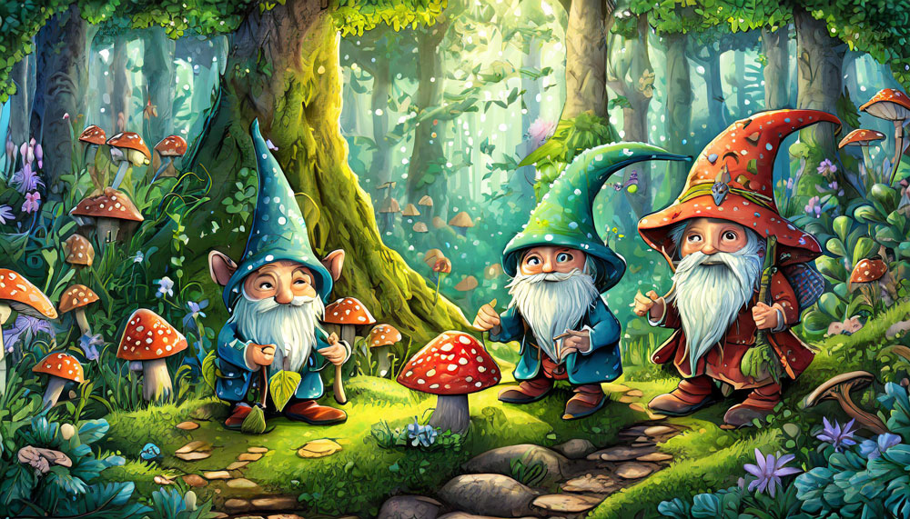
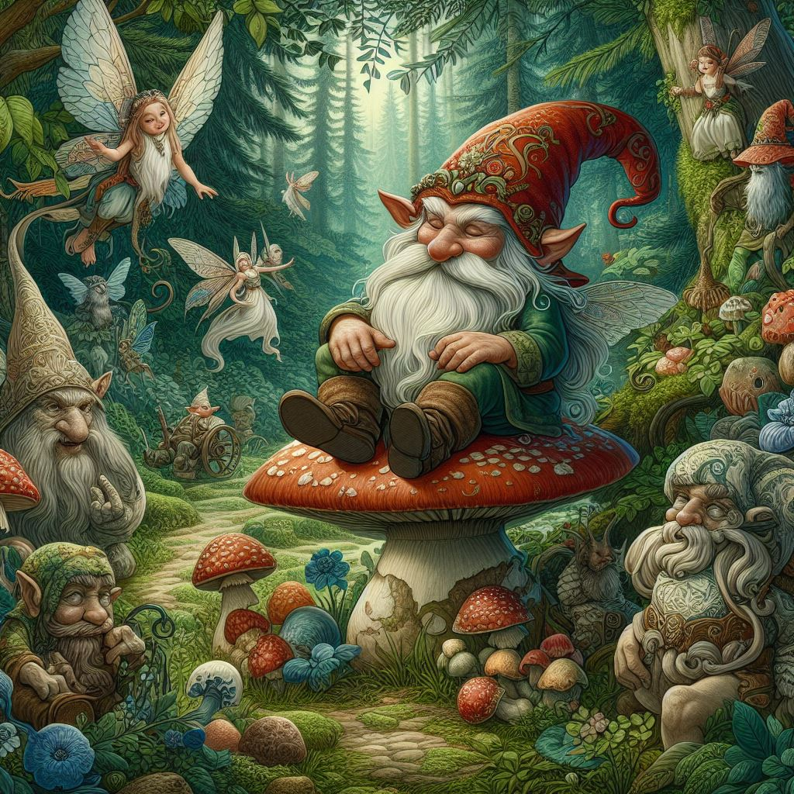

The History of Gnomes
The history of gnomes is a fascinating blend of folklore, mythology, and cultural evolution. Gnomes are mythical creatures typically depicted as small, humanoid beings with a penchant for living underground.
16th Century Renaissance

Fairy tail art style of gnomes and fairies
The Renaissance period in Europe saw a resurgence of interest in folklore and mythological beings, including gnomes. Swiss alchemist Paracelsus played a significant role in shaping the modern conception of gnomes during this era. In the 16th century, Paracelsus described gnomes as diminutive creatures inhabiting the interior of the Earth, possessing knowledge of natural phenomena and alchemical secrets. His writings helped solidify the image of gnomes as wise and mysterious beings, further embedding them into the cultural consciousness of Europe.
The Renaissance marked a pivotal moment in the popularization of gnomes, setting the stage for their continued presence in literature, art, and folklore for centuries to come.
Gardens and Ornamental Figures
In the 19th century, gnomes took on a new role as decorative garden ornaments, particularly in Germany where they were known as "gartenzwerg" or "garden dwarfs." These garden gnomes became popular adornments for estates and gardens, often depicted in the traditional gnome attire of pointed hats and long beards. Initially inspired by folklore, these ornamental gnomes soon became iconic symbols of whimsy and charm in gardens around the world. Their presence added a touch of magic to outdoor spaces, inviting whimsical narratives and sparking the imagination of those who encountered them.